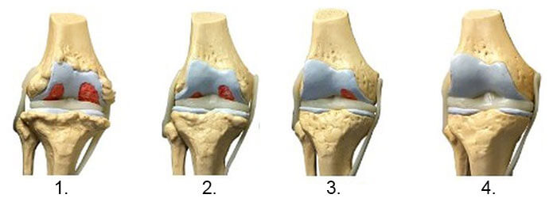
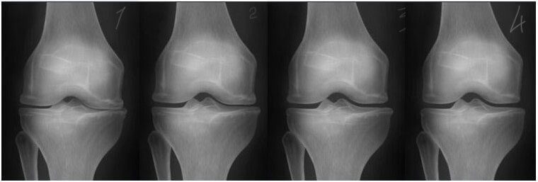
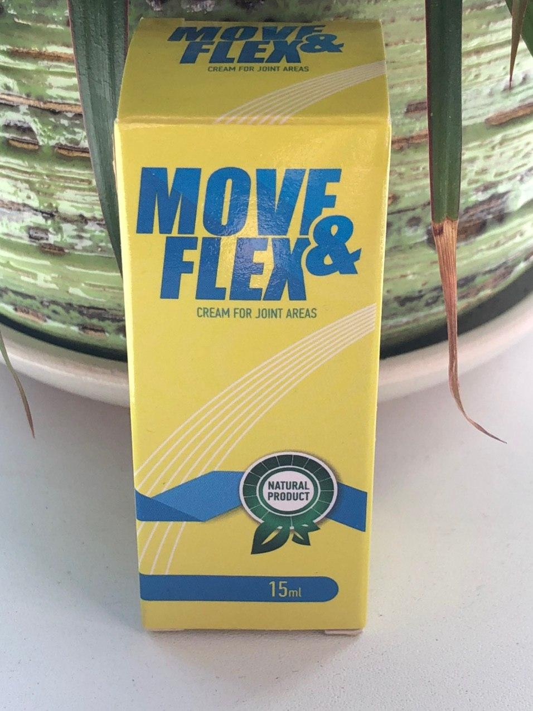

СТАВИ КАТО НА МЛАДИ ГОДИНИ? СЕГА Е РЕАЛНОСТ!
Публикуван материалСилвия Тодорова СЛЕД ЛЕЧЕНИЕТО НА СТАВИТЕ МОГА ДА НАПРАВЯ ШПАГАТ!
Днес ще ви разкажем много интересна историяза това, че чудесата се случват. Само че, зад тях често се крият съвременните постижения на науката.
Роден град на Силвия Тодорова е Варна. Тя е типична българска пенсионерка. След гимназията завършва за медицинска сестра.
Тя има държавни награди, тъй като в миналото тя е работила като медицинска сестра във Военна болница и е помагала на ранените. По-късно Силвия отива да работи на селскостопански ниви. Според Силвия тя е преминала през много изпитания: носила е тежки колички с реколта по нивите, работила е под силното слънце и при висока влажност, работила е с леки обувки през зимата, постоянно замръзвала и много се измаряла.
Военната служба и тежката работа в полето не може да не повлияят на здравето на жената. Силвия започна да се чувства зле, но най-много проблеми е получила в ставите. Обадило се е ежедневието в жегата на полето, а също и влагата.
Силвия разви артроза на коленните стави. Известно време жената се е борила с болестта. Ходила по лекари (докато е могла да ходи), редовно е приемала лекарства, отпускани по лекарско предписание, пиела различни отвари и се разтривала с различни мехлеми. Но болестта прогресирала. Всяка стъпка е била ужасна болка, довеждала я до сълзи. И на 80 годишна възраст тя се е предала и легнала на легло.
„Нямаше повече сили да изтърпя тези мъки“, признава пенсионерката пред нашия кореспондент. `Реших, че ще е по-добре да легна и да умра.`
Като „дете на войната“ и участник във военните действия, й се предлага да замени ставите с протези на преференциални условия. Но дори при тези условия, цената на операцията е била твърде висока.
„Не съм имала такива пари. Пак, и самата операция ме плашеше. И все пак 80 години не е шега. Реших, нека става това, което има да става “, спомня си Силвия.
„Веднага се обадих на дъщеря ми. Тя живее в София. Тя дойде, свърза се с този лекар и той се съгласи да ми помогне “, спомня си Силвия.
И тогава се случи истинско чудо. Този лекар всеки ден идвал в дома на Силвия Тодорова и втривал едно лекарство в ставите си. След 4 седмици тя е успяла да се измъкне от инвалидната количка и сама е отишла на лекар за среща. Шест седмици по-късно Силвия напълно се отървава от артроза. Което е подтвърдено от рентгенолози.
Вляво: рентген на дясното коляно на Силвия Тодорова, 80-годишна. Хрущялът е почти напълно унищожен. Препоръки на лекарите - подмяна на ставата с протеза.
Вдясно: рентген на дясното коляно на Силвия Тодорова след лечение с Move&Flex крем.
НО ТОВА НЕ Е КРАЯ НА ИСТОРИЯТА!
" Знаете ли,след лечението почувствах, че краката ми са все едно като на младини! И започнах да правя упражнения, които не бях правила от четиридесет години. А след това сериозно се заинтересувах от йога и сега това е любовта на моя живот, не мога да си представя как съм живяла без нея. Препоръчвам на всички да се занимават с йога, пак аз самата вече мога да обучавам.".
" И след това реших да се науча да правя шпагат! Потренирах един месец и го направих! Без болка в коленете. Ставите са сякаш нови! Много съм благодарна на моя лекар".
ОТ РЕДАКЦИЯТА:
Разбрахме името на лекаря, който е лекувал Силвия Тодорова. Оказа се др Веселин Бъчваров, лекар от най-високата категория с тридесет годишен практически опит. Срещнахме се с др Бъчваров и той ни разказа за своето лекарство.
Практикуващ лекар, доктор на медицинските науки, професор. Последовател на съвременната кинезитерапия - алтернативен (на неврология и ортопедия) метод за лечение на хронични заболявания и наранявания на опорно-двигателния апарат, като акцентът не е върху лекарствата и носенето на корсети, а върху вътрешните резерви на тялото и разбирането на собственото тяло от пациента.
- ДР БЪЧВАРОВ, РАСКАЖЕТЕ НИ МАЛКО ПОВЕЧЕ ЗА СРЕДСТВОТО, КОЕТО ИЗПОЛЗВАТЕ.
- Става дума за средството
- КАК РАБОТИ ТОВА ЧУДОДЕЙСТВЕНО СРЕДСТВО
- Точно тук няма никакво чудо, това е само наука. Основната съставка на продукта е масло от семена на бял тръ: точно тази субстанция, което блокира всяко възпаление в тялото и подмладява клетките на хрущяла и ставите. Тоест, неговата основна задача - създаване на новата хрущялна тъкан. Огромна лечебна сила се съдържа в масло от семена на бял тръ. Учените подготвят лекарство против рак, изполвайки масло от семена на бял тръ за основа. Можете ли да си представите биологичната сила на подобен механизъм? Нищо по-ефективно за възстановяване на хрущяла на ставата в природата все още не съществува.
В допълнение, кремът съдържа естествен бадемово масло и пчелен восък, които помагат да се отървете от болките в ставите и да възстановите тяхната функция. Плюс екстракти от рядки срещани тропически растения, които дават своя голям принос за ефективността на продукта. Мисля, че няма смисъл да се говори за ползите от тропическите билки. Дори едно приложение е достатъчно, за да активирате повече от 930 000 клетки, които участват пряко в кръвотока. И така, след всяко приложение на крема ставите заздравяват и подмладяват. Това е основният принцип на възстановяването.
- ЗВУЧИ ВПЕЧАТЛЯВАЩО, МОЖЕ ЛИ ЛИ ДА НИ ОБЯСНИТЕ, КАКВО ОЗНАЧАВА ТОВА, ЗА ОБИКНОВЕНИТЕ ХОРА, КОИТО СА БОЛНИ?

- Това означава, че средновековната медицина е нещо от миналото и можете да излекувате болестите си у дома след един два месеца.
Move&Flex
не охлажда, не обезболява, `рестартира` организма на клетъчно ниво. Той
Още на първия ден Move&Flex стартира системата за регенерация на организма и спира синдрома на болката, ще го почувствате веднага. Само за две или три седмици възстановяването ще приключи и най-важното, за да се предотврати повторната поява на болката курса незабавно трябва да се повтори.

- Рентгеновата снимка по-долу показва типична картина на възстановяване на колянната става.

- Благодарение на крема Move&Flex можете да решите проблемите с болестите си у дома след един два месеца. Move&Flex не охлажда, не обезболява, той `рестартира` организма на клетъчно ниво. Елиминира причината за самата болка и връща ставите в първоначалното им здраво състояние.
- ВИЕ КАЗАХТЕ ЧЕ С Move&Flex ВЪЗМОЖНО Е ДА РЕШИТЕ ПРОБЛЕМА С АРТРОЗА ЗА 4-6 СЕДМИЦИ. КЪДЕ МОГА ДА КУПУПЯ ТОВА СРЕДСТВО?
- С голяма радост мога да кажа, че най-накрая и при нас забелязахме тази разработка на учените и реализирахме програмата за разпространение сред населението
Move&Flex
в рамките на промоцията...
Цената на дребно за Move&Flex
138 лева
за една опаковка, но благодарение на специалната промоция от производителя сега можете
да закупите Move&Flex с 50% отстъпка
на цената от
69 лева!
Само че,
- ПРОФ БЪЧВАРОВ, БЛАГОДАРЯ ВИ ЗА ИНТЕРВЮТО! МОЖЕ ЛИ ДА КАЖЕТЕ НЕЩО НА НАШИТЕ ЧИТАТЕЛИ В ЗАКЛЮЧЕНИЕ ?
- Да, разбира се. Искам да насоча вниманието ви към огромното количество фалшификати в нашите аптеки. Обикновено те фалшифицират най-популярните и оборотни продукти. Уви, но популярността на Move&Flex не оставя съмнение, че в близкото бъдеще ще бъде пуснат огромен брой фалшификати. Вече сме се сблъсквали с фалшификатите, затова призоваваме всички да купуват Move&Flex само от надеждни продавачи или в рамките на промоцията по тази програма.
ВНИМАНИЕ! Пазете се от фалшификати!


